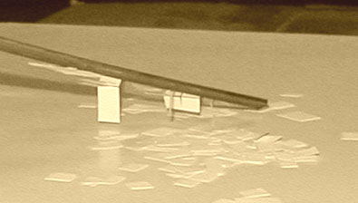
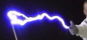

|
|
Navig.
page/section


_____
|
|
Pages soeurs
I, A propos des liants
II, Bulles, siccativ., struct. élec.
III, Caséine, phosphore, dissociation
IV, Les orbitales
V, L'aérogel
VI, Polarisation de la lumière
VII, Sfumato et diffusion Rayleigh
VIII, Les interférentielles
IX, Dextrine, farine et chiralité
X, L'ocre bleue
XI, Les métamatériaux
XII, Le jaunissement
XIII, Laser etc.
XIV, L'holographie
XV, L'holographie numérique
XVI, Extérieur, intérieur, chaux
XVII, L'électrolyse et les ions
XVIII, L'électricité, un peu plus loin
XIX, Oxydation, métaux
XX, Les échelles
XXI, Nature et évolution des résines
XXII, Le mouillage pigmentaire
XXIII, La molette
XXIV, Blanche neige
XXV, Lumière et matière
XXVI, Magnétisme
XXVII, Ambre et vieilles branches
XXVIII, L'origami miroir
XXIX, Le feu
XXX, Peau du métal
XXXI, La ville en un souffle
XXXII, Oxyder des matériaux
XXXIII, Ocre bleue, une solution
_____
|
Copyright © www.dotapea.com
Tous droits réservés.
Précisions cliquer ici
|
|
| |
|
|
Les dialogues sur la physique-chimie
appliquée aux arts
Chapitre
XVIII
L'électricité,
encore un peu plus loin
Questionnements et applications
|
 |
dial dial
dial
|
Ce chapitre des Dialogues de Dotapea est une discussion entre Jean-Louis,
physico-chimiste au CNRS, et un candide, Emmanuel..
De l'expérience scolaire basique à la téléportation ce second texte du triptyque
Electricité/métaux précise des concepts en complément des chapitres
XVII et
XIX. Des applications artistiques sont
évoquées.
Article avec vidéo externe
|
|
Emmanuel :
Quelle différence y a-t-il entre champ électrique et champ
électromagnétique ?
|
|
|
|
Jean-Louis : Un champ
électrique c'est juste un champ électrique, et c'est purement statique.
Par exemple la règle en plastique que tu frottes avec un pull et qui
attire des petits papiers, c'est un champ électrique statique.

On peu très facilement créer
des champs électriques intenses. Un pull que tu enlèves génère des
milliers de volts.
|
|
L'électricité statique... |
|
Les champs électriques
intenses se créent très facilement par « effet de pointe ». Si tu as une
pointe, c'est-à-dire un objet avec un rayon de courbure faible, les
charges s'accumulent en ce point et le champ électrique y est donc
maximal. C'est cet effet qui est responsable de l'efficacité des
paratonnerres ou de l'apparition des "feux de Saint Elme" sur les objets
pointus lors des ambiances orageuses.
|
|
...un phénomène non dénué de dimensions sensitives |
|
Emmanuel :
Il y a peut-être là des applications artistiques, même avec des moyens
limités.
Que peut-on produire, finalement ? On a parlé des lampes à plasma et de
l'effet Kirlian dans l'article sur les phases de la matière [lien], il y a les
aurores polaires artificielles
(mais là, l'effet est-il bien électrostatique ?). Sûrement d'autres
choses, qu'en penses-tu ? Et si je peux produire des milliers de volts
avec un pull, comment puis-je utiliser ensuite « plastiquement » cette
énergie ? (sans me prendre pour une centrale électrique, comme disait le
capitaine Haddock)
Jean-Louis :
Quelques exemples d'applications sur
mgvolt.com,
menzelphoto.com,
hvfx.co.uk
et en particulier
ceci
(vidéo) :

Les décharges électriques sont toujours spectaculaires et
impressionnantes, notamment à cause du bruit (la foudre dans un
salon...). Je ne sais pas si des plasticiens ont déjà utilisé ce genre
de ressource. C'est facile à faire, il y a "juste" le problème de la
sécurité. Ces montages ne sont pas destinés à fonctionner en permanence,
non plus.
Emmanuel :
Là on est dans le domaine de la performance. Très intéressant, notamment
dans un environnement "en décalage" comme un salon. C'est sûrement peu
exploité et il faudrait peut-être explorer aussi ce que l'on peut faire
dans le domaine de l'installation avec des phénomènes comme le feu de
Saint Elme. Autant de pistes.
|
|
Des
applications artistiques ? |
|
|
|
L'électromagnétisme :
photon et mouvement |
|
Emmanuel : Donc quand tu dis
statique, c'est par opposition à ondulatoire ? Parce que à strictement
parler dans l'électricité statique il y a bien un mouvement des corps
chargés, non ?
Jean-Louis :
Les papiers bougent mais pas le champ.
Statique s'entend par opposition à propagatif. Ça peut être statique et
oscillant.
Disons que statique, c'est limité à un coin d'espace.
Emmanuel :
Comme dans l'expérience de la règle et des papiers. Comme pas mal
d'écoliers je pense, je ne l'ai jamais comprise. En plus à l'époque on
nous faisait plutôt frotter un bout d'ébonite avec une peau de chat,
quelle horreur ! Bref, ça échappe un peu à la compréhension parce que le
papier paraît plutôt neutre alors pourquoi réagit-il à un champ
électrique ?
|
|
Mais
qu'est-ce qui bouge ? |
|
Jean-Louis : Tout n'est
jamais vraiment exactement neutre au point de vue des charges
électriques, donc ça peut déjà expliquer les papiers qui sont attirés.
Mais surtout, un champ électrique peut facilement charger un corps
neutre, même à distance, ça s'appelle"électrisation par influence". Donc
le champ de la règle arrache quelques charges aux papiers, qui du coup
sont attirés par la règle.
Emmanuel :
D'accord.
Une chose m'intrigue : quel est l'agent de "l'électrisation par
influence" ? Tu écrivais que les photons sont les vecteurs des champs
électromagnétiques, mais quand c'est statique ?
Jean-Louis :
Un champ électrique statique suffisamment intense exerce des
forces sur
toutes les charges du voisinage, celles qui ne sont pas assez bien
attachées s'envolent. C'est ce qui fait que tu as des étincelles ou des
arcs électriques, par exemple. L'air, en principe neutre et isolant,
devient ionique et donc conducteur parce que le champ arrache des
électrons au molécules d'azote et d'oxygène. Du coup le courant passe.
Emmanuel :
Bien. Mais je n'arrive pas à comprendre ce que c'est qui arrache
les électrons ni du coup à quoi correspond l'intensité d'un champ.
|
|
Électrisation par influence |
|
Jean-Louis : L'accumulation
de charges électriques crée un champ, et si tu approche un morceau de
matière de ce champ, dans un premier temps il « polarise », ce qui veut
dire que les charges qui y sont subissent l'influence du champ extérieur
et se déplacent. Si le champ que tu approches est très fort, il arrache
des électrons à la matière qui « s'ionise ».
Emmanuel :
D'accord.
Donc se trouver dans un champ électrostatique, ça veut dire être soumis
à une sorte de « force de mouvement », à une motion. Une sorte de «
réorganisation » en fonction d'une polarisation. Est-ce que je chauffe ?
|
|
Polarisation et déplacement |
|
Jean-Louis : Une charge
électrique crée un champ.
D'un point de vue einsteinien
on dira qu'elle modifie le continuum autour d'elle et que du coup les
autres
charges perçoivent sa présence et réagissent.
D'un point de vue moins
métaphysique, un
physicien des particules dira que deux charges interagissent
en échangeant des photons, qui sont le vecteur des interactions
électromagnétiques statiques ou dynamiques.
Un « électricien
» dira qu'une charge crée « un champ » et que ce champ « fait
» que d'autres charges subissent une « force ».
|
|
Trois points de vue |
|
Ne sois pas troublé de ne pas
tout comprendre, parce que pour résumer : on ne sait pas ce que c'est
qu'un électron, on ne sait pas ce que c'est qu'une charge, on ne sait
pas ce que c'est qu'un champ et on ne sait pas ce que c'est qu'une
force. Et si quelqu'un te dit le contraire, il ment !
C'est comme le temps... Il n'y a pas si longtemps si tu regardais la
définition du temps dans le Larousse on te répondait « durée », et si tu
regardais « durée » on te répondais « espace de temps ». Ouh la la...
Emmanuel :
C'est le vecteur, dans le cas de l'électricité
statique, qui pose peut-être le plus violemment question. Notamment à
cause de l'expérience des bouts de papier. On voit ce mouvement, c'est «
palpable ». Et c'est très déstabilisant de voir à quel point
l'explication du physicien des particules est opposée aux deux autres.
Veux-tu ajouter quelque chose sur ce point ?
Jean-Louis :
En me répétant, je redis en préliminaire qu'on ne sait pas ce que
c'est qu'une force, même si on sait en produire et que l'on en subit en
permanence. Cela ne doit pas nous empêcher d'expérimenter et de
théoriser. Le vecteur, l'agent de la force, c'est encore un mystère. Le
mystérieux graviton qui est censé être le médiateur de la gravité n'a
encore jamais été trouvé, ce qui n'empêche pas la gravité de nous coller
au plancher. On pense que les photons sont le vecteur des forces
électromagnétiques, pourquoi pas. Mais déjà, les photons ne sont pas
sensibles aux champs électromagnétiques... Quant aux autres forces
fondamentales de la nature (interaction forte, interaction faible) elles
ont aussi leur vecteur, mais c'est pas pour ça que l'on comprend mieux
comment ça marche...
|
|
Que
comprend-on vraiment ? |
|
Les photons se déplacent dans
le vide à la vitesse de la lumière, dans la matière à une vitesse
inférieure qui dépend de l'indice de réfraction de cette matière.
L'information est véhiculée par le champ électrique, à une vitesse qui
ne peut donc pas être supérieure à celle de la lumière.
Dans les fils électriques, les électrons sont freinés par les choc sur
les atomes immobiles du fil, mais ils subissent en permanence
l'accélération du champ électrique.
Dans l'exemple du tuyau d'arrosage [voir
passage in Chap. XVII],
ce qui fait avancer l'eau du tuyau, c'est la pression que tu mets quand
tu oeuvres le robinet. Cette pression se transmet dans le tuyau à la
vitesse non pas de la lumière mais du son. Néanmoins, l'eau ne sort pas
à 1500 mètres par seconde mais seulement quelques m/s. C'est comme pour
les électrons.
Emmanuel :
Dans le cas du fil électrique [voir
passage in
Chap. XVII], la charge (ou peut-être le champ électrique) semble se
déplacer sur des distances bien plus importantes que dans le modèle
statique, qui, si je te suis, est de portée locale. Mais j'ai bien du
mal à imaginer des photons « transporter » le champ dans du métal.
Comment ça se passe ?
|
|
Comment l'information se transmet-elle ? |
|
Jean-Louis : Il n'y a pas
d'impossibilité physique à avoir des photons n'importe où. Les protons
et les électrons des atomes de cuivre du fil électrique "se parlent" en
échangeant des photons. Je ne pense pas qu'il faille voir le champ
électrique entre les deux bouts du fil comme le champ propagatif d'une
antenne de téléphone portable. Le plus simple c'est de dire qu'une
machine (une grosse génératrice chez EDF) pompe des électrons dans le
fil et que ça engendre un mouvement collectif des électrons dans ton fil
chez toi. C'est vraiment l'analogie du robinet, le tuyau est mis sous
pression "à l'usine" et quand tu ouvres chez toi, ça coule. EDF met une
"pression" (une différence de potentiel) dans les fils et cette pression
fait "couler" les électrons dans ton aspirateur.
|
|
Des photons pour se parler dans le métal |
|
Emmanuel : J'ai lu quelque
part que dans les expériences plus ou moins récentes liées à la
téléportation une information était transmise sans aucun délai, quelque
chose qui a un rapport avec le spin de particules appariées ou quelque
chose comme ça je crois. Donc je me demandais s'il y avait un rapport
entre la vitesse de transmission de l'information et l'apparition d'un
champ : pas de délai=pas de champ, un délai=un champ... ou bien si c'est
une idée complètement à côté de la réalité !
Jean-Louis :
La téléportation, on ne sait pas trop encore ce que c'est. On ne
peut téléporter qu'un "état quantique", pas de la matière. Les objets
quantiques ont la particularité de fonctionner par probabilités (tu as
entendu parler du chat de Schrödinger ?).
Emmanuel :
Oui. Pauvre minou. [lien
externe sur le chat de Schrödinger]
Jean-Louis :
Une certaine chance qu'il soit ici, une certaine chance qu'il n'y
soit pas, et ceci pour toutes les propriétés : position, vitesse,
polarisation, spin, moment magnétique, etc, etc... On peut créer des
particules liées, c'est-à-dire que l'état de l'une est fonction de
l'état de l'autre. Par exemple deux électrons au même endroit ont
forcément des spins opposés.
Emmanuel :
Ca a un rapport avec les cases de ton
schéma sur les orbitales,
ça aussi, non ?
Jean-Louis :
Oui... fascinantes, ces petites cases, hein ?
Tant que l'on ne mesure pas les spins, on ne sait rien, et si on mesure le
premier, on connait forcément celui de l'autre. Donc tu lies deux
électrons, sans les mesurer, tu les sépares à un grande distance. Ce
n'est qu'au moment où tu mesureras le spin d'un des électrons que celui
de l'autre sera déterminé, même si il est "infiniment" loin. En tout cas
c'est ce qu'on pense, et ça pose beaucoup de problèmes philosophiques... |
|
Perspectives quantiques...
un
premier survol
|
|
Article suivant |
Retour
début de page
|
|

 Communication
Communication
|
|